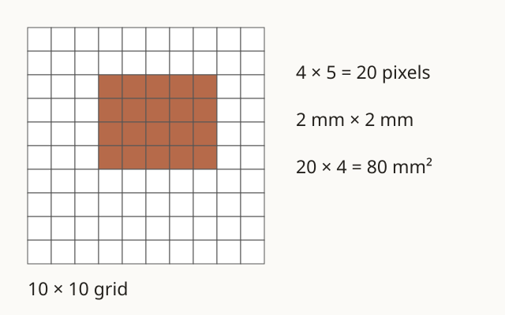
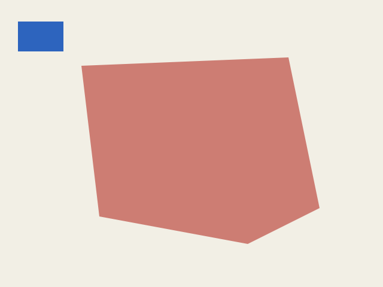
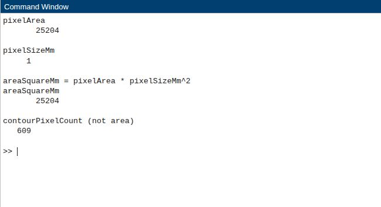

案例二逐段教學：紙面色塊分割與面積
小任務 · 建議預留 5–10 分鐘
用 10×10 方格算面積
小島創作所要估算紙面色塊的面積。先把紙看成方格紙，每格是一個像素，數出塗色格子，再換成平方毫米。
1. 先觀察一個例子
如圖 2-1，10×10 共有 100 格，其中第 3–6 列、第 4–8 欄塗色，共 4×5＝20 格。每格邊長若是 2 mm，一格面積就是 4 mm²。


2. 在 MATLAB 試做
開啟 MATLAB 的 Command Window，貼上以下 5 行；也可下載 case2_quickstart.m，放到 Current Folder 後按 Run。這段小任務把結果顯示在 Command Window，變數留在 Workspace。
mask = false(10,10);
mask(3:6,4:8) = true;
pixelSizeMm = 2;
areaSquareMm = nnz(mask) * pixelSizeMm^2;
disp([nnz(mask) areaSquareMm]);
3. 對照結果，說出原因
預期顯示 20 80，分別是選中像素數與平方毫米面積。false(10,10) 建立全為假的方格，true 標記選中的格子；這張真假表就是遮罩。nnz 數出真值，邊長平方再把像素數換成面積。
理解檢查：同樣 20 格，邊長改成 1 mm，面積是多少？
20 mm²。邊長由 2 mm 減半，每格面積變成四分之一，所以總面積由 80 變成 20 mm²。
4. 接到完整流程
接著看圖 2-2：完整影像每個像素有紅、綠、藍三個數值（RGB）。程式要求紅色至少 170，且比綠、藍的較大值至少多 55，再用真假值記錄是否選中。四方向連通區域把上下左右相接的格子分組，程式保留最大的一組，再數面積。短例子直接指定遮罩；完整流程從 RGB 找出遮罩。


完整案例的數值可對照圖 2-3：把區域像素數、尺度與平方毫米面積放在一起核對，並另外閱讀輪廓像素數。


下載與執行案例 2
解壓後，將 MATLAB 的 Current Folder 切到 matlab_edition，開啟 case2_image_measure_matlab.m。在 Command Window 輸入 s = case2_image_measure_matlab; 執行完整參考版。
下載已有：本案完整程式、小任務、八步流程、逐段解說（段內逐行）、提示詞與報告範本。執行後生成：資料與結果放在 matlab_edition/matlab_artifacts/case2；同名輸出會在重跑時更新。先另存要保留的結果。
完整八步流程｜從一張圖片到紅色輪廓與面積報告
這個案例要完成什麼？
我們用一張合成紙面圖片，找出紅色色塊、畫出它的紅色外輪廓，再算出占了多少面積。整個流程是：讀圖 → 找出目標區域 → 核對選取結果 → 畫輪廓 → 換算面積 → 整理圖片、做法與程式。這一題練習的是影像處理。
本案例是「助教實作方式」。正式題二使用老師指定的影像與目標，要求紅色外輪廓、每像素 1 mm × 1 mm 的面積計算，以及包含「執行結果、處理程序、程式碼」的 PDF。合成紙面讓大家先學會同一套工作流程；換成正式影像時，分割方法與參數要依目標特性重新判斷。
從頭到尾，依序做這 8 件事
目的：確認圖檔的產生位置。例子：完整程式執行後才生成原圖與遮罩。
操作：先開啟程式，確認結果存放位置。 進入教材的
matlab_edition，開啟case2_image_measure_matlab.m，依後面的段落與四階段提示詞練習。完整參考版可輸入s = case2_image_measure_matlab;，結果放在matlab_artifacts/case2。重跑會更新同名範例輸出。結果：case2 目錄出現圖片與量測摘要。解釋：先找到同一次執行的產物，後面才能一致比較。接著做第 2 步。
目的：說清楚量測目標。例子：圖 2-2 的紅色多邊形是目標。
操作：先看原圖，說清楚要選哪一塊。 打開
synthetic_paper_blocks.png，確認紅色目標、藍色干擾塊與背景的位置。程式讀回的尺寸是 240×320×3，代表高、寬與三個色彩通道。先記下目標的外觀，後面才有依據檢查選取結果。結果：記下紅塊、藍塊與背景位置。解釋：RGB 的三個數字記錄每個像素顏色。接著做第 3 步。
目的：用規則標出候選像素。例子：紅色 205、綠色 125、藍色 115，差值為 80。
操作：把目標選出來，得到一張遮罩。 本例用紅色通道至少 170、紅色相對優勢至少 55 的條件選出候選像素，再保留最大的四方向連通區域。遮罩可想成一張標記紙：選中的位置記為真，其餘位置記為假。正式影像的亮度與顏色條件不同，需先觀察影像，再選擇合適方法。
結果：目標像素通過 170 與 55 兩個條件。解釋：先比較 RGB，再以四方向相接把像素分組。接著做第 4 步。
目的：核對選取的範圍。例子：白色遮罩應對準原圖紅塊。
操作：把遮罩和原圖放在一起看。 打開
segmentation_mask.png，確認選中的區域對準紅色色塊，藍色干擾塊留在背景。檢查邊緣是否合理、區域是否完整；若需要調整，回到門檻與連通區域這一步，再重新檢查。結果：遮罩涵蓋完整目標，藍塊落在背景。解釋：遮罩記錄哪些像素將被納入面積計算。接著做第 5 步。
目的：讓邊界容易檢查。例子：紅線沿著目標外緣。
操作：畫出紅色外輪廓，留下可讀的結果圖。 打開
contour_overlay.png，核對紅線是否沿著目標邊界。本例目標是實心區域；遇到有孔洞的區域，要另區分外輪廓與內部孔洞邊界。輪廓圖用來呈現位置，面積則從整個選取區域計算。結果：輪廓疊圖能對回原圖位置。解釋：輪廓標位置，整個元件提供面積。接著做第 6 步。
目的：把像素數換成面積。例子：圖 2-1 的 20 格乘 2²，得到 80 mm²。
操作：先數區域像素，再換算面積。 到
measurement.json查看pixelArea、pixelSizeMm與areaSquareMm。計算方式是「區域像素數 × 每像素邊長的平方」。本例尺度為 1 mm／像素，實測區域 25,204 像素，面積為 25,204 mm²；609 是輪廓線像素數，另列作為邊界檢查資訊。自己的報告以自己的影像與輸出為依據。結果：JSON 的面積等於 pixelArea × pixelSizeMm²。解釋：平方來自每格長與寬各乘一次尺度。接著做第 7 步。
目的：留下量測依據。例子：同時保存原圖、遮罩及 measurement.json。
操作：保存每一步的證據。 保留原圖、遮罩、紅色輪廓圖、
measurement.json與.m。在處理程序中寫清楚讀圖、門檻、區域選取、輪廓與面積公式，讓讀者能由原圖一路核對到最後數字。使用三案完整包時，可執行run_matlab_tests檢查教材參考版，再針對自己的影像檢查選取品質。結果：參數、圖片與數字彼此對應。解釋：更改分割條件會改變選中區域，也可能改變面積。接著做第 8 步。
目的：整理可核對的量測報告。例子：結果圖旁標示面積和 mm²。
操作：組成題目指定的三部分 PDF。 用
CASE2_REPORT_TEMPLATE.md整理「執行結果、處理程序、程式碼」。結果放原圖、紅色輪廓圖、面積與單位；程序交代每一步及參數；程式碼保留完整可讀內容。開啟 PDF 核對圖中文字、紅線與公式，再依課程指定方式交件。正式作業使用老師指定影像與尺度。結果：三部分 PDF 能清楚呈現處理程序。解釋：正式尺度由題目決定，報告需註明使用值。接著用下方逐段解說（段內逐行）核對自己的程式。
做完時，你手上應該有什麼？
- 練習過程：一支
.m、原圖、遮罩、紅色輪廓疊圖與measurement.json。 - 報告證據：目標選取理由、處理步驟、紅色外輪廓、區域像素數、面積公式與單位。
- 正式交件：以正式影像完成處理，整理為「執行結果、處理程序、程式碼」三部分 PDF。
接著逐段讀程式，對照每一段如何產生圖片、選出目標，並把量測結果保存下來。
一、逐段解說（段內逐行）
來源程式：case2_image_measure_matlab.m｜共 156 個實體行、151 個非空行｜SHA-256：182b99d306c25f47d05331170e23b872057fbf425195bd72ba57a0b59b15ba0c
這支程式會建立虛構紙面影像，以 RGB 門檻找出目標區域，從原始分割元件計算像素面積，再以 1 mm × 1 mm/像素換算，最後畫出純紅色外輪廓。
以下依實際工作流程分成 13 段。每段先保留一個完整原始碼區塊，再在同一段內逐行說明；「第 N 行」直接對應來源檔實體行號。每個非空行恰好說明一次；段內原始行保留，函式間空白以段落區隔。
第 1 段：輸出路徑與安全根目錄（第 1–6 行）
本段目的：完成「輸出路徑與安全根目錄」，讓這組程式成為前後相接的一個工作單位。
function summary = case2_image_measure_matlab(outputDir) % 定義案例二主函式並回傳量測摘要。
projectRoot = fileparts(mfilename('fullpath')); % 以本程式位置作為明確專案根目錄。
if nargin < 1 % 呼叫者省略輸出資料夾時套用預設值。
outputDir = fullfile(projectRoot,'matlab_artifacts','case2'); % 使用教材內固定的預設輸出位置。
end % 結束預設輸出條件。
outputDir = ensureSafeOutput(projectRoot,outputDir); % 驗證並建立安全輸出資料夾。
段內逐行說明：
第 1 行：定義案例二主函式並回傳量測摘要。 function 宣告 case2_image_measure_matlab；等號左側列回傳值，小括號內依順序列出呼叫者要傳入的資料。 這行的資料是：outputDir：字元路徑，案例二輸出資料夾；summary：struct，保存門檻、比例與量測結果。
第 2 行：以本程式位置作為明確專案根目錄。 = 是指定運算：先算右側 fileparts(mfilename('fullpath'))，再把結果存進左側 projectRoot。 行尾 ; 會結束敘述，並讓 MATLAB Command Window 保持簡潔。 mfilename('fullpath') 回傳目前函式檔的完整路徑與檔名；外層 fileparts 取出資料夾部分，因此後續相對路徑都以教材檔所在位置為基準。 這行的資料是：projectRoot：字元路徑，本 .m 檔所在資料夾。
第 3 行：呼叫者省略輸出資料夾時套用預設值。 if 先計算後面的邏輯條件；結果為 true 時執行下一行到配對的 end。 nargin 是這次呼叫實際收到的輸入數。直接輸入函式名稱時為 0，0 < 1 成立並進入預設路徑分支；傳入一個輸出路徑時為 1，條件為 false，MATLAB 直接跳到配對的 end。
第 4 行：使用教材內固定的預設輸出位置。 fullfile 依作業系統規則組合資料夾與檔名，避免手動拼接斜線。 這行的資料是：outputDir：字元路徑，案例二輸出資料夾；projectRoot：字元路徑，本 .m 檔所在資料夾。 小例子：例如 fullfile(root,'images','a.png') 會組成目前作業系統可用的完整路徑。
第 5 行：結束預設輸出條件。 end 關閉縮排所對應的最近一層函式、條件或迴圈，下一行回到上一層流程。
第 6 行：驗證並建立安全輸出資料夾。 這行的資料是：outputDir：字元路徑，案例二輸出資料夾；projectRoot：字元路徑，本 .m 檔所在資料夾。
段落銜接：完成「輸出路徑與安全根目錄」後，下一段進入「比例、門檻與紙面背景」。
第 2 段：比例、門檻與紙面背景（第 7–16 行）
本段目的：完成「比例、門檻與紙面背景」，讓這組程式成為前後相接的一個工作單位。
pixelSizeMm = 1.0; % 依正式題目邏輯設定每個像素邊長代表一毫米。
redThreshold = 170; % 設定紅色通道分割門檻。
dominanceMargin = 55; % 設定紅色高於其他通道的最小差距。
imageHeight = 240; % 設定合成紙面影像高度。
imageWidth = 320; % 設定合成紙面影像寬度。
paperImage = zeros(imageHeight,imageWidth,3,'uint8'); % 建立三通道空白影像陣列。
paperImage(:,:,1) = 242; % 設定米白背景的紅色通道。
paperImage(:,:,2) = 239; % 設定米白背景的綠色通道。
paperImage(:,:,3) = 229; % 設定米白背景的藍色通道。
[xGrid,yGrid] = meshgrid(1:imageWidth,1:imageHeight); % 建立每個像素的水平與垂直座標。
段內逐行說明：
第 7 行：依正式題目邏輯設定每個像素邊長代表一毫米。 這行的資料是：pixelSizeMm：純量 double，每個像素邊長 1 mm。 小例子：一個像素代表 1 mm × 1 mm，所以 250 個元件像素會換算成 250 mm²。
第 8 行：設定紅色通道分割門檻。
第 9 行：設定紅色高於其他通道的最小差距。
第 10 行：設定合成紙面影像高度。
第 11 行：設定合成紙面影像寬度。
第 12 行：建立三通道空白影像陣列。 zeros(m,n) 先配置 m×n 的全零陣列，之後再逐格填入結果。 這行的資料是：paperImage：240×320×3 uint8，合成 RGB 影像。 小例子：例如 zeros(2,3) 會得到 2 列、3 欄的全零矩陣。
第 13 行：設定米白背景的紅色通道。 索引中的 : 代表該維度全部元素；例如 X(:,2) 會取全部資料列的第 2 欄。 這行的資料是：paperImage：240×320×3 uint8，合成 RGB 影像。 小例子：例如 A(:,2) 代表取 A 的全部資料列與第 2 欄。
第 14 行：設定米白背景的綠色通道。 索引中的 : 代表該維度全部元素；例如 X(:,2) 會取全部資料列的第 2 欄。 這行的資料是：paperImage：240×320×3 uint8，合成 RGB 影像。 小例子：例如 A(:,2) 代表取 A 的全部資料列與第 2 欄。
第 15 行：設定米白背景的藍色通道。 索引中的 : 代表該維度全部元素；例如 X(:,2) 會取全部資料列的第 2 欄。 這行的資料是：paperImage：240×320×3 uint8，合成 RGB 影像。 小例子：例如 A(:,2) 代表取 A 的全部資料列與第 2 欄。
第 16 行：建立每個像素的水平與垂直座標。 meshgrid(x,y) 將水平座標 x 與垂直座標 y 展開成同尺寸矩陣；每個 (row,column) 因此都有可交給幾何公式的 X、Y 值。 meshgrid 把水平與垂直座標展開成整張影像大小的座標矩陣。 這行的資料是：xGrid：240×320 double，水平座標矩陣；yGrid：240×320 double，垂直座標矩陣。
段落銜接：完成「比例、門檻與紙面背景」後，下一段進入「建立目標與干擾色塊，再寫入、讀回影像」。
第 3 段：建立目標與干擾色塊，再寫入、讀回影像（第 17–25 行）
本段目的：完成「建立目標與干擾色塊，再寫入、讀回影像」，讓這組程式成為前後相接的一個工作單位。
polygonX = [68 241 267 207 83]; % 定義不規則紅色色塊水平頂點。
polygonY = [55 48 174 204 181]; % 定義不規則紅色色塊垂直頂點。
targetMask = inpolygon(xGrid,yGrid,polygonX,polygonY); % 以 base MATLAB 判斷多邊形內像素。
paperImage = paintMask(paperImage,targetMask,[205 125 115]); % 將目標區域塗成柔和紅色以凸顯外框。
blueMask = xGrid >= 15 & xGrid <= 52 & yGrid >= 18 & yGrid <= 42; % 建立藍色干擾矩形遮罩。
paperImage = paintMask(paperImage,blueMask,[45 100 190]); % 將干擾區域塗成藍色。
sourcePath = fullfile(outputDir,'synthetic_paper_blocks.png'); % 指定合成紙面影像檔名。
imwrite(paperImage,sourcePath); % 使用 base MATLAB 寫出 PNG 影像。
loadedImage = imread(sourcePath); % 從檔案實際讀回合成影像。
段內逐行說明：
第 17 行：定義不規則紅色色塊水平頂點。
第 18 行：定義不規則紅色色塊垂直頂點。
第 19 行：以 base MATLAB 判斷多邊形內像素。 inpolygon 對每個座標判斷是否位於頂點所定義的多邊形內或邊界上，回傳與座標網格同尺寸的 logical 遮罩。 inpolygon 判斷每個座標是否落在多邊形內，輸出 logical 遮罩。 這行的資料是：xGrid：240×320 double，水平座標矩陣；yGrid：240×320 double，垂直座標矩陣；targetMask：240×320 logical，目標多邊形遮罩。
第 20 行：將目標區域塗成柔和紅色以凸顯外框。 這行的資料是：paperImage：240×320×3 uint8，合成 RGB 影像；targetMask：240×320 logical，目標多邊形遮罩。
第 21 行：建立藍色干擾矩形遮罩。 這行的資料是：xGrid：240×320 double，水平座標矩陣；yGrid：240×320 double，垂直座標矩陣；blueMask：240×320 logical，藍色干擾塊遮罩。
第 22 行：將干擾區域塗成藍色。 這行的資料是：paperImage：240×320×3 uint8，合成 RGB 影像；blueMask：240×320 logical，藍色干擾塊遮罩。
第 23 行：指定合成紙面影像檔名。 fullfile 依作業系統規則組合資料夾與檔名，避免手動拼接斜線。 這行的資料是：outputDir：字元路徑，案例二輸出資料夾。 小例子：例如 fullfile(root,'images','a.png') 會組成目前作業系統可用的完整路徑。
第 24 行：使用 base MATLAB 寫出 PNG 影像。 imwrite 把目前像素陣列編碼成 PNG 並寫到指定路徑；後續讀回或測試會以這個檔案為準。 imwrite 把像素陣列寫成影像檔。 這行的資料是：paperImage：240×320×3 uint8，合成 RGB 影像。
第 25 行：從檔案實際讀回合成影像。 imread 從 PNG 解碼實際像素；RGB 圖通常得到 H×W×3 uint8，第三維依序是紅、綠、藍。 imread 從影像檔解碼像素陣列。 這行的資料是：loadedImage：240×320×3 uint8，從 PNG 讀回的影像。
段落銜接：完成「建立目標與干擾色塊，再寫入、讀回影像」後，下一段進入「RGB 門檻分割與空結果防護」。
第 4 段：RGB 門檻分割與空結果防護（第 26–32 行）
本段目的：完成「RGB 門檻分割與空結果防護」，讓這組程式成為前後相接的一個工作單位。
red = double(loadedImage(:,:,1)); % 取出紅色通道並轉成 double。
green = double(loadedImage(:,:,2)); % 取出綠色通道並轉成 double。
blue = double(loadedImage(:,:,3)); % 取出藍色通道並轉成 double。
mask = red >= redThreshold & red - max(green,blue) >= dominanceMargin; % 同時套用紅色門檻與優勢差距。
if ~any(mask,'all') % 檢查目前門檻的目標像素數是否為零。
error('Tutorial:EmptySegmentation','分割結果為空：請檢查紅色色塊與門檻設定。'); % 回報可辨識的空分割錯誤。
end % 結束空分割檢查。
段內逐行說明：
第 26 行：取出紅色通道並轉成 double。 索引中的 : 代表該維度全部元素；例如 X(:,2) 會取全部資料列的第 2 欄。 這行的資料是：loadedImage：240×320×3 uint8，從 PNG 讀回的影像；red：240×320 double，紅色通道。 小例子：例如 A(:,2) 代表取 A 的全部資料列與第 2 欄。
第 27 行：取出綠色通道並轉成 double。 索引中的 : 代表該維度全部元素；例如 X(:,2) 會取全部資料列的第 2 欄。 這行的資料是：loadedImage：240×320×3 uint8，從 PNG 讀回的影像；green：240×320 double，綠色通道。 小例子：例如 A(:,2) 代表取 A 的全部資料列與第 2 欄。
第 28 行：取出藍色通道並轉成 double。 索引中的 : 代表該維度全部元素；例如 X(:,2) 會取全部資料列的第 2 欄。 這行的資料是：loadedImage：240×320×3 uint8，從 PNG 讀回的影像；blue：240×320 double，藍色通道。 小例子：例如 A(:,2) 代表取 A 的全部資料列與第 2 欄。
第 29 行：同時套用紅色門檻與優勢差距。 這行的資料是：red：240×320 double，紅色通道；green：240×320 double，綠色通道；blue：240×320 double，藍色通道；mask：240×320 logical，門檻分割結果。
第 30 行：檢查目前門檻的目標像素數是否為零。 if 先計算後面的邏輯條件；結果為 true 時執行下一行到配對的 end。 ~ 在邏輯式中代表反轉；在多重回傳值左側則代表略過該回傳值。 any 檢查指定範圍是否至少有一個 true。 這行的資料是：mask：240×320 logical，門檻分割結果。
第 31 行：回報可辨識的空分割錯誤。 error 以固定識別碼與訊息停止流程，方便使用者回報精確原因。
第 32 行：結束空分割檢查。 end 關閉縮排所對應的最近一層函式、條件或迴圈，下一行回到上一層流程。
段落銜接：完成「RGB 門檻分割與空結果防護」後，下一段進入「元件、面積、遮罩與紅色輪廓輸出」。
第 5 段：元件、面積、遮罩與紅色輪廓輸出（第 33–42 行）
本段目的：完成「元件、面積、遮罩與紅色輪廓輸出」，讓這組程式成為前後相接的一個工作單位。
component = largestComponent(mask); % 以四方向連通搜尋取得最大元件。
contour = contourPixels(component); % 找出至少一側接觸背景的輪廓像素。
pixelArea = nnz(component); % 以整個分割元件像素數計算面積。
contourPixelCount = nnz(contour); % 另記錄輪廓線像素數供比較。
areaSquareMm = pixelArea .* pixelSizeMm .^ 2; % 依像素邊長平方換算平方毫米。
maskImage = uint8(component) .* 255; % 將邏輯元件轉成黑底白色遮罩。
imwrite(maskImage,fullfile(outputDir,'segmentation_mask.png')); % 保存分割遮罩。
overlay = loadedImage; % 複製來源影像避免修改原始檔。
overlay = paintMask(overlay,contour,[255 0 0]); % 以純紅色標示外輪廓。
imwrite(overlay,fullfile(outputDir,'contour_overlay.png')); % 保存輪廓疊圖。
段內逐行說明：
第 33 行：以四方向連通搜尋取得最大元件。 這行的資料是：mask：240×320 logical，門檻分割結果；component：240×320 logical，最大連通元件。
第 34 行：找出至少一側接觸背景的輪廓像素。 這行的資料是：component：240×320 logical，最大連通元件；contour：240×320 logical，元件邊界像素。
第 35 行：以整個分割元件像素數計算面積。 nnz 計算非零或 true 元素數量。 這行的資料是：component：240×320 logical，最大連通元件；pixelArea：純量整數，原始元件像素數。 小例子：例如遮罩中有 12 個 true，nnz(mask) 就回傳 12。
第 36 行：另記錄輪廓線像素數供比較。 nnz 計算非零或 true 元素數量。 這行的資料是：contour：240×320 logical，元件邊界像素；contourPixelCount：純量整數，邊界像素數。 小例子：例如遮罩中有 12 個 true，nnz(mask) 就回傳 12。
第 37 行：依像素邊長平方換算平方毫米。 .* 代表對應位置逐元素相乘，兩側陣列尺寸要能相容。 .^ 代表每個元素各自做次方運算。 這行的資料是：pixelSizeMm：純量 double，每個像素邊長 1 mm；pixelArea：純量整數，原始元件像素數；areaSquareMm：純量 double，換算後平方毫米面積。 小例子：例如 [2 4] .* [3 5] 會得到 [6 20]，每個位置各自相乘。
第 38 行：將邏輯元件轉成黑底白色遮罩。 .* 代表對應位置逐元素相乘，兩側陣列尺寸要能相容。 這行的資料是：component：240×320 logical，最大連通元件。 小例子：例如 [2 4] .* [3 5] 會得到 [6 20]，每個位置各自相乘。
第 39 行：保存分割遮罩。 imwrite 把目前像素陣列編碼成 PNG 並寫到指定路徑；後續讀回或測試會以這個檔案為準。 fullfile 依作業系統規則組合資料夾與檔名，避免手動拼接斜線。 imwrite 把像素陣列寫成影像檔。 這行的資料是：outputDir：字元路徑，案例二輸出資料夾。 小例子：例如 fullfile(root,'images','a.png') 會組成目前作業系統可用的完整路徑。
第 40 行：複製來源影像避免修改原始檔。 這行的資料是：loadedImage：240×320×3 uint8，從 PNG 讀回的影像；overlay：240×320×3 uint8，純紅色輪廓疊圖。
第 41 行：以純紅色標示外輪廓。 這行的資料是：contour：240×320 logical，元件邊界像素；overlay：240×320×3 uint8，純紅色輪廓疊圖。
第 42 行：保存輪廓疊圖。 imwrite 把目前像素陣列編碼成 PNG 並寫到指定路徑；後續讀回或測試會以這個檔案為準。 fullfile 依作業系統規則組合資料夾與檔名，避免手動拼接斜線。 imwrite 把像素陣列寫成影像檔。 這行的資料是：outputDir：字元路徑，案例二輸出資料夾；overlay：240×320×3 uint8，純紅色輪廓疊圖。 小例子：例如 fullfile(root,'images','a.png') 會組成目前作業系統可用的完整路徑。
段落銜接：完成「元件、面積、遮罩與紅色輪廓輸出」後，下一段進入「量測摘要與 JSON」。
第 6 段：量測摘要與 JSON（第 43–55 行）
本段目的：完成「量測摘要與 JSON」，讓這組程式成為前後相接的一個工作單位。
summary = struct; % 建立可稽核的量測摘要結構。
summary.outputDir = outputDir; % 保存實際輸出資料夾供階段暫測與檔案檢查。
summary.pixelSizeMm = pixelSizeMm; % 記錄明確像素比例。
summary.conversionFormula = 'areaSquareMm = pixelArea * pixelSizeMm^2'; % 記錄換算公式。
summary.redThreshold = redThreshold; % 記錄紅色通道門檻。
summary.dominanceMargin = dominanceMargin; % 記錄紅色優勢差距。
summary.pixelArea = pixelArea; % 記錄整個元件的像素面積。
summary.contourPixelCount = contourPixelCount; % 記錄輪廓線像素數。
summary.areaSquareMm = areaSquareMm; % 記錄換算後平方毫米面積。
summary.areaNote = '面積使用整個分割元件像素；輪廓線像素另列供檢查。'; % 保存面積解讀說明。
writeJson(fullfile(outputDir,'measurement.json'),summary); % 將量測摘要寫成 JSON。
fprintf('案例二完成：元件像素面積 %d，輪廓像素 %d，換算面積 %.3f 平方毫米。\n',pixelArea,contourPixelCount,areaSquareMm); % 顯示實際量測摘要。
end % 結束案例二主函式。
段內逐行說明：
第 43 行：建立可稽核的量測摘要結構。 這行的資料是：summary：struct，保存門檻、比例與量測結果。
第 44 行：保存實際輸出資料夾供階段暫測與檔案檢查。 這行的資料是：outputDir：字元路徑，案例二輸出資料夾；summary：struct，保存門檻、比例與量測結果。
第 45 行：記錄明確像素比例。 這行的資料是：pixelSizeMm：純量 double，每個像素邊長 1 mm；summary：struct，保存門檻、比例與量測結果。
第 46 行：記錄換算公式。 這行的資料是：summary：struct，保存門檻、比例與量測結果。
第 47 行：記錄紅色通道門檻。 這行的資料是：summary：struct，保存門檻、比例與量測結果。
第 48 行：記錄紅色優勢差距。 這行的資料是：summary：struct，保存門檻、比例與量測結果。
第 49 行：記錄整個元件的像素面積。 這行的資料是：pixelArea：純量整數，原始元件像素數；summary：struct，保存門檻、比例與量測結果。
第 50 行：記錄輪廓線像素數。 這行的資料是：contourPixelCount：純量整數，邊界像素數；summary：struct，保存門檻、比例與量測結果。
第 51 行：記錄換算後平方毫米面積。 這行的資料是：areaSquareMm：純量 double，換算後平方毫米面積；summary：struct，保存門檻、比例與量測結果。
第 52 行：保存面積解讀說明。 這行的資料是：summary：struct，保存門檻、比例與量測結果。
第 53 行：將量測摘要寫成 JSON。 fullfile 依作業系統規則組合資料夾與檔名，避免手動拼接斜線。 這行的資料是：outputDir：字元路徑，案例二輸出資料夾；summary：struct，保存門檻、比例與量測結果。 小例子：例如 fullfile(root,'images','a.png') 會組成目前作業系統可用的完整路徑。
第 54 行：顯示實際量測摘要。 fprintf 依格式字串輸出文字；%d、%.3f 等位置會由後續變數填入。 這行的資料是：pixelArea：純量整數，原始元件像素數；contourPixelCount：純量整數，邊界像素數；areaSquareMm：純量 double，換算後平方毫米面積。
第 55 行：結束案例二主函式。 end 關閉縮排所對應的最近一層函式、條件或迴圈，下一行回到上一層流程。
段落銜接：完成「量測摘要與 JSON」後，下一段進入「遮罩塗色函式」。
第 7 段：遮罩塗色函式（第 57–63 行）
本段目的：完成「遮罩塗色函式」，讓這組程式成為前後相接的一個工作單位。
function image = paintMask(image,mask,color) % 定義依遮罩塗上指定 RGB 顏色的函式。
for channel = 1:3 % 逐一處理紅綠藍三個通道。
plane = image(:,:,channel); % 取出目前色彩通道。
plane(mask) = uint8(color(channel)); % 將遮罩內像素改成指定通道值。
image(:,:,channel) = plane; % 將修改後通道放回影像。
end % 結束三通道繪製迴圈。
end % 結束遮罩塗色函式。
段內逐行說明：
第 57 行：定義依遮罩塗上指定 RGB 顏色的函式。 function 宣告 paintMask；等號左側列回傳值，小括號內依順序列出呼叫者要傳入的資料。 這行的資料是：image：H×W×3 uint8，輸入與輸出的 RGB 影像；mask：H×W logical，要上色的位置；color：1×3 數值列向量，指定 RGB 顏色。
第 58 行：逐一處理紅綠藍三個通道。 for 建立迴圈；迴圈變數會依序取用右側序列中的每個值。 這行的資料是：channel：純量整數，目前處理第 1、2 或 3 通道。
第 59 行：取出目前色彩通道。 索引中的 : 代表該維度全部元素；例如 X(:,2) 會取全部資料列的第 2 欄。 這行的資料是：image：H×W×3 uint8，輸入與輸出的 RGB 影像；channel：純量整數，目前處理第 1、2 或 3 通道；plane：H×W uint8，目前取出的單一色彩通道。 小例子：例如 A(:,2) 代表取 A 的全部資料列與第 2 欄。
第 60 行：將遮罩內像素改成指定通道值。 這行的資料是：mask：H×W logical，要上色的位置；color：1×3 數值列向量，指定 RGB 顏色；channel：純量整數，目前處理第 1、2 或 3 通道；plane：H×W uint8，目前取出的單一色彩通道。
第 61 行：將修改後通道放回影像。 索引中的 : 代表該維度全部元素；例如 X(:,2) 會取全部資料列的第 2 欄。 這行的資料是：image：H×W×3 uint8，輸入與輸出的 RGB 影像；channel：純量整數，目前處理第 1、2 或 3 通道；plane：H×W uint8，目前取出的單一色彩通道。 小例子：例如 A(:,2) 代表取 A 的全部資料列與第 2 欄。
第 62 行：結束三通道繪製迴圈。 end 關閉縮排所對應的最近一層函式、條件或迴圈，下一行回到上一層流程。
第 63 行：結束遮罩塗色函式。 end 關閉縮排所對應的最近一層函式、條件或迴圈，下一行回到上一層流程。
段落銜接：完成「遮罩塗色函式」後，下一段進入「最大連通元件初始化」。
第 8 段：最大連通元件初始化（第 65–81 行）
本段目的：完成「最大連通元件初始化」，讓這組程式成為前後相接的一個工作單位。
function largest = largestComponent(mask) % 定義以 base MATLAB 自行實作的最大連通元件函式。
[height,width] = size(mask); % 取得遮罩高度與寬度。
visited = false(height,width); % 建立已拜訪像素紀錄。
largest = false(height,width); % 建立目前最大元件遮罩。
targetList = find(mask); % 取得所有目標像素線性索引。
for targetPosition = 1:numel(targetList) % 逐一查看待分組的目標像素。
startIndex = targetList(targetPosition); % 取得目前候選起點索引。
if visited(startIndex) % 檢查起點是否已屬於先前元件。
continue % 跳過已拜訪像素。
end % 結束已拜訪判斷。
queue = zeros(nnz(mask),1); % 配置最多容納所有目標像素的佇列。
componentIndex = zeros(nnz(mask),1); % 配置目前元件索引儲存空間。
queueHead = 1; % 將佇列讀取位置設為第一格。
queueTail = 1; % 將佇列寫入位置設為第一格。
componentCount = 0; % 將目前元件像素數歸零。
queue(queueTail) = startIndex; % 將起點放入佇列。
visited(startIndex) = true; % 將起點標為已拜訪。
段內逐行說明：
第 65 行：定義以 base MATLAB 自行實作的最大連通元件函式。 function 宣告 largestComponent；等號左側列回傳值，小括號內依順序列出呼叫者要傳入的資料。 這行的資料是：mask：H×W logical，全部候選前景；largest：H×W logical，目前找到的最大元件。
第 66 行：取得遮罩高度與寬度。 這行的資料是：mask：H×W logical，全部候選前景。
第 67 行：建立已拜訪像素紀錄。 false(m,n) 建立 m×n logical 陣列，所有初始值都是 false。 這行的資料是：visited：H×W logical，記錄已加入搜尋的像素。
第 68 行：建立目前最大元件遮罩。 false(m,n) 建立 m×n logical 陣列，所有初始值都是 false。 這行的資料是：largest：H×W logical，目前找到的最大元件。
第 69 行：取得所有目標像素線性索引。 find 回傳條件為 true 的索引位置。 這行的資料是：mask：H×W logical，全部候選前景；targetList：K×1 double，全部前景的線性索引。
第 70 行：逐一查看待分組的目標像素。 for 建立迴圈；迴圈變數會依序取用右側序列中的每個值。 numel 回傳陣列的元素總數，不受列向量或欄向量方向影響。 這行的資料是：targetList：K×1 double，全部前景的線性索引。
第 71 行：取得目前候選起點索引。 這行的資料是：targetList：K×1 double，全部前景的線性索引。
第 72 行：檢查起點是否已屬於先前元件。 if 先計算後面的邏輯條件；結果為 true 時執行下一行到配對的 end。 這行的資料是：visited：H×W logical，記錄已加入搜尋的像素。
第 73 行：跳過已拜訪像素。 continue 直接進到迴圈下一輪，略過本輪後面的敘述。
第 74 行：結束已拜訪判斷。 end 關閉縮排所對應的最近一層函式、條件或迴圈，下一行回到上一層流程。
第 75 行：配置最多容納所有目標像素的佇列。 zeros(m,n) 先配置 m×n 的全零陣列，之後再逐格填入結果。 nnz 計算非零或 true 元素數量。 這行的資料是：mask：H×W logical，全部候選前景；queue：K×1 double，廣度搜尋待處理索引。 小例子：例如 zeros(2,3) 會得到 2 列、3 欄的全零矩陣。
第 76 行：配置目前元件索引儲存空間。 zeros(m,n) 先配置 m×n 的全零陣列，之後再逐格填入結果。 nnz 計算非零或 true 元素數量。 這行的資料是：mask：H×W logical，全部候選前景；componentIndex：K×1 double，目前元件索引暫存。 小例子：例如 zeros(2,3) 會得到 2 列、3 欄的全零矩陣。
第 77 行：將佇列讀取位置設為第一格。
第 78 行：將佇列寫入位置設為第一格。
第 79 行：將目前元件像素數歸零。 這行的資料是：componentCount：純量整數，目前元件像素數。
第 80 行：將起點放入佇列。 這行的資料是：queue：K×1 double，廣度搜尋待處理索引。
第 81 行：將起點標為已拜訪。 這行的資料是：visited：H×W logical，記錄已加入搜尋的像素。
段落銜接：完成「最大連通元件初始化」後，下一段進入「四方向廣度搜尋」。
第 9 段：四方向廣度搜尋（第 82–102 行）
本段目的：完成「四方向廣度搜尋」，讓這組程式成為前後相接的一個工作單位。
while queueHead <= queueTail % 持續處理佇列內待搜尋像素。
currentIndex = queue(queueHead); % 取出目前像素索引。
queueHead = queueHead + 1; % 將讀取位置移到下一格。
componentCount = componentCount + 1; % 增加目前元件像素數。
componentIndex(componentCount) = currentIndex; % 保存目前元件像素索引。
[row,column] = ind2sub([height width],currentIndex); % 將線性索引轉成列與欄。
neighbors = [row - 1 column;row + 1 column;row column - 1;row column + 1]; % 列出上下左右鄰居。
for neighborPosition = 1:4 % 逐一檢查四個相鄰位置。
neighborRow = neighbors(neighborPosition,1); % 取得相鄰位置列座標。
neighborColumn = neighbors(neighborPosition,2); % 取得相鄰位置欄座標。
inside = neighborRow >= 1 && neighborRow <= height && neighborColumn >= 1 && neighborColumn <= width; % 檢查鄰居是否在影像範圍。
if inside % 只處理影像範圍內的鄰居。
neighborIndex = sub2ind([height width],neighborRow,neighborColumn); % 將鄰居座標轉成線性索引。
if mask(neighborIndex) && ~visited(neighborIndex) % 檢查鄰居是待拜訪目標像素。
queueTail = queueTail + 1; % 將佇列寫入位置往後移。
queue(queueTail) = neighborIndex; % 把相鄰目標像素加入佇列。
visited(neighborIndex) = true; % 立即標記避免重複加入。
end % 結束相鄰像素加入條件。
end % 結束影像範圍條件。
end % 結束四方向鄰居迴圈。
end % 結束目前連通元件搜尋。
段內逐行說明：
第 82 行：持續處理佇列內待搜尋像素。 while 會持續重複區塊內容，直到條件轉為 false。
第 83 行：取出目前像素索引。 這行的資料是：queue：K×1 double，廣度搜尋待處理索引。
第 84 行：將讀取位置移到下一格。
第 85 行：增加目前元件像素數。 這行的資料是：componentCount：純量整數，目前元件像素數。
第 86 行：保存目前元件像素索引。 這行的資料是：componentIndex：K×1 double，目前元件索引暫存；componentCount：純量整數，目前元件像素數。
第 87 行：將線性索引轉成列與欄。 ind2sub([height width],currentIndex) 把欄優先的線性索引還原成列、欄座標，供上下左右鄰居檢查。 這行的資料是：row：純量整數，目前像素列座標；column：純量整數，目前像素欄座標。
第 88 行：列出上下左右鄰居。 這行的資料是：neighbors：4×2 double，上下左右鄰居的列欄座標；row：純量整數，目前像素列座標；column：純量整數，目前像素欄座標。
第 89 行：逐一檢查四個相鄰位置。 for 建立迴圈；迴圈變數會依序取用右側序列中的每個值。
第 90 行：取得相鄰位置列座標。 這行的資料是：neighbors：4×2 double，上下左右鄰居的列欄座標。
第 91 行：取得相鄰位置欄座標。 這行的資料是：neighbors：4×2 double，上下左右鄰居的列欄座標。
第 92 行：檢查鄰居是否在影像範圍。
第 93 行：只處理影像範圍內的鄰居。 if 先計算後面的邏輯條件；結果為 true 時執行下一行到配對的 end。
第 94 行：將鄰居座標轉成線性索引。 sub2ind([height width],row,column) 把列、欄座標轉回單一線性索引，方便存入佇列或 logical 陣列。
第 95 行：檢查鄰居是待拜訪目標像素。 if 先計算後面的邏輯條件；結果為 true 時執行下一行到配對的 end。 ~ 在邏輯式中代表反轉；在多重回傳值左側則代表略過該回傳值。 這行的資料是：mask：H×W logical，全部候選前景；visited：H×W logical，記錄已加入搜尋的像素。
第 96 行：將佇列寫入位置往後移。
第 97 行：把相鄰目標像素加入佇列。 這行的資料是：queue：K×1 double，廣度搜尋待處理索引。
第 98 行：立即標記避免重複加入。 這行的資料是：visited：H×W logical，記錄已加入搜尋的像素。
第 99 行：結束相鄰像素加入條件。 end 關閉縮排所對應的最近一層函式、條件或迴圈，下一行回到上一層流程。
第 100 行：結束影像範圍條件。 end 關閉縮排所對應的最近一層函式、條件或迴圈，下一行回到上一層流程。
第 101 行：結束四方向鄰居迴圈。 end 關閉縮排所對應的最近一層函式、條件或迴圈，下一行回到上一層流程。
第 102 行：結束目前連通元件搜尋。 end 關閉縮排所對應的最近一層函式、條件或迴圈，下一行回到上一層流程。
段落銜接：完成「四方向廣度搜尋」後，下一段進入「更新最大元件」。
第 10 段：更新最大元件（第 103–108 行）
本段目的：完成「更新最大元件」，讓這組程式成為前後相接的一個工作單位。
if componentCount > nnz(largest) % 比較目前元件與已知最大元件。
largest(:) = false; % 清除先前最大元件遮罩。
largest(componentIndex(1:componentCount)) = true; % 將目前較大元件設為新結果。
end % 結束最大元件更新條件。
end % 結束所有目標像素搜尋迴圈。
end % 結束最大連通元件函式。
段內逐行說明：
第 103 行：比較目前元件與已知最大元件。 if 先計算後面的邏輯條件；結果為 true 時執行下一行到配對的 end。 nnz 計算非零或 true 元素數量。 這行的資料是：largest：H×W logical，目前找到的最大元件；componentCount：純量整數，目前元件像素數。 小例子：例如遮罩中有 12 個 true，nnz(mask) 就回傳 12。
第 104 行：清除先前最大元件遮罩。 這行的資料是：largest：H×W logical，目前找到的最大元件。
第 105 行：將目前較大元件設為新結果。 這行的資料是：largest：H×W logical，目前找到的最大元件；componentIndex：K×1 double，目前元件索引暫存；componentCount：純量整數，目前元件像素數。
第 106 行：結束最大元件更新條件。 end 關閉縮排所對應的最近一層函式、條件或迴圈，下一行回到上一層流程。
第 107 行：結束所有目標像素搜尋迴圈。 end 關閉縮排所對應的最近一層函式、條件或迴圈，下一行回到上一層流程。
第 108 行：結束最大連通元件函式。 end 關閉縮排所對應的最近一層函式、條件或迴圈，下一行回到上一層流程。
段落銜接：完成「更新最大元件」後，下一段進入「輪廓像素抽取」。
第 11 段：輪廓像素抽取（第 110–123 行）
本段目的：完成「輪廓像素抽取」，讓這組程式成為前後相接的一個工作單位。
function contour = contourPixels(component) % 定義四方向輪廓像素抽取函式。
[height,width] = size(component); % 取得元件遮罩尺寸。
contour = false(height,width); % 建立全假的輪廓遮罩。
[rows,columns] = find(component); % 取得所有元件像素座標。
for index = 1:numel(rows) % 逐一查看每個元件像素。
row = rows(index); % 取得目前像素列座標。
column = columns(index); % 取得目前像素欄座標。
isBoundary = row == 1 || row == height || column == 1 || column == width; % 檢查是否接觸影像外框。
if ~isBoundary % 只在影像內部像素檢查四個鄰居。
isBoundary = ~component(row - 1,column) || ~component(row + 1,column) || ~component(row,column - 1) || ~component(row,column + 1); % 檢查至少一側是否為背景。
end % 結束鄰居輪廓判斷。
contour(row,column) = isBoundary; % 保存目前像素是否屬於輪廓。
end % 結束元件像素迴圈。
end % 結束輪廓抽取函式。
段內逐行說明：
第 110 行：定義四方向輪廓像素抽取函式。 function 宣告 contourPixels；等號左側列回傳值，小括號內依順序列出呼叫者要傳入的資料。 這行的資料是：component：H×W logical，單一實心元件遮罩；contour：H×W logical，至少一側接觸背景的邊界像素。
第 111 行：取得元件遮罩尺寸。 這行的資料是：component：H×W logical，單一實心元件遮罩。
第 112 行：建立全假的輪廓遮罩。 false(m,n) 建立 m×n logical 陣列，所有初始值都是 false。 這行的資料是：contour：H×W logical，至少一側接觸背景的邊界像素。
第 113 行：取得所有元件像素座標。 find 回傳條件為 true 的索引位置。 這行的資料是：component：H×W logical，單一實心元件遮罩；rows：K×1 double，全部元件像素列座標；columns：K×1 double，全部元件像素欄座標。
第 114 行：逐一查看每個元件像素。 for 建立迴圈；迴圈變數會依序取用右側序列中的每個值。 numel 回傳陣列的元素總數，不受列向量或欄向量方向影響。 這行的資料是：rows：K×1 double，全部元件像素列座標。
第 115 行：取得目前像素列座標。 這行的資料是：rows：K×1 double，全部元件像素列座標。
第 116 行：取得目前像素欄座標。 這行的資料是：columns：K×1 double，全部元件像素欄座標。
第 117 行：檢查是否接觸影像外框。 這行的資料是：isBoundary：logical 純量，目前像素是否為邊界。
第 118 行：只在影像內部像素檢查四個鄰居。 if 先計算後面的邏輯條件；結果為 true 時執行下一行到配對的 end。 ~ 在邏輯式中代表反轉；在多重回傳值左側則代表略過該回傳值。 這行的資料是：isBoundary：logical 純量，目前像素是否為邊界。
第 119 行：檢查至少一側是否為背景。 ~ 在邏輯式中代表反轉；在多重回傳值左側則代表略過該回傳值。 目前資料是實心多邊形，因此這個四鄰域規則標出外輪廓；若元件內含孔洞，孔洞旁也接觸背景，會同時形成內邊界，報告時要另外區分。 這行的資料是：component：H×W logical，單一實心元件遮罩；isBoundary：logical 純量，目前像素是否為邊界。
第 120 行：結束鄰居輪廓判斷。 end 關閉縮排所對應的最近一層函式、條件或迴圈，下一行回到上一層流程。
第 121 行：保存目前像素是否屬於輪廓。 這行的資料是：contour：H×W logical，至少一側接觸背景的邊界像素；isBoundary：logical 純量，目前像素是否為邊界。
第 122 行：結束元件像素迴圈。 end 關閉縮排所對應的最近一層函式、條件或迴圈，下一行回到上一層流程。
第 123 行：結束輪廓抽取函式。 end 關閉縮排所對應的最近一層函式、條件或迴圈，下一行回到上一層流程。
段落銜接：完成「輪廓像素抽取」後，下一段進入「安全輸出路徑」。
第 12 段：安全輸出路徑（第 125–147 行）
本段目的：完成「安全輸出路徑」，讓這組程式成為前後相接的一個工作單位。
function outputDir = ensureSafeOutput(projectRoot,rawPath) % 定義限制輸出範圍的安全函式。
if ~usejava('jvm') % 檢查安全路徑正規化所需的 JVM 必要條件。
error('Tutorial:JVMRequired','本教材的安全路徑檢查需要啟用 MATLAB JVM。'); % 以固定識別碼清楚回報 JVM 必要條件。
end % 結束 JVM 前置條件檢查。
rawFile = java.io.File(char(rawPath)); % 建立候選路徑物件以判斷路徑型態。
if ~rawFile.isAbsolute() % 處理呼叫者提供的相對輸出路徑。
rawPath = fullfile(projectRoot,char(rawPath)); % 將相對路徑固定接在本程式專案根目錄下。
end % 結束相對路徑正規化條件。
rootPath = char(java.io.File(projectRoot).getCanonicalPath()); % 取得專案根目錄標準路徑。
candidatePath = char(java.io.File(char(rawPath)).getCanonicalPath()); % 取得候選輸出標準路徑。
if ispc % 判斷是否為 Windows 路徑環境。
isInside = startsWith(lower([candidatePath filesep]),lower([rootPath filesep])); % 統一轉成小寫後檢查路徑範圍。
else % 處理 macOS、Linux 與 MATLAB Online。
isInside = startsWith([candidatePath filesep],[rootPath filesep]); % 區分大小寫檢查路徑範圍。
end % 結束作業系統判斷。
if ~isInside % 檢查候選位置的教材專案範圍。
error('Tutorial:UnsafeOutput','安全限制：輸出資料夾必須位於 MATLAB 教材專案內。'); % 回報固定識別碼錯誤。
end % 結束安全範圍檢查。
if ~isfolder(candidatePath) % 檢查輸出資料夾是否需要建立。
mkdir(candidatePath); % 建立資料夾並保留現有內容。
end % 結束資料夾建立條件。
outputDir = candidatePath; % 回傳安全標準路徑。
end % 結束安全輸出函式。
段內逐行說明：
第 125 行：定義限制輸出範圍的安全函式。 function 宣告 ensureSafeOutput；等號左側列回傳值，小括號內依順序列出呼叫者要傳入的資料。 這行的資料是：projectRoot：字元路徑，允許輸出的專案根目錄；rawPath：呼叫者提供的原始路徑；outputDir：字元路徑，驗證後的輸出位置。
第 126 行：檢查安全路徑正規化所需的 JVM 必要條件。 if 先計算後面的邏輯條件；結果為 true 時執行下一行到配對的 end。 ~ 在邏輯式中代表反轉；在多重回傳值左側則代表略過該回傳值。
第 127 行：以固定識別碼清楚回報 JVM 必要條件。 error 以固定識別碼與訊息停止流程，方便使用者回報精確原因。
第 128 行：結束 JVM 前置條件檢查。 end 關閉縮排所對應的最近一層函式、條件或迴圈，下一行回到上一層流程。
第 129 行：建立候選路徑物件以判斷路徑型態。 char 把 string 或字元輸入統一成 Java 可接收的字元向量；java.io.File 建立路徑物件，下一行用 isAbsolute() 判斷它是否為絕對路徑。 char 將 string 純量轉成字元向量，供 Java 或舊式 MATLAB 介面使用。 這行的資料是：rawPath：呼叫者提供的原始路徑；rawFile：Java File 物件，用來判斷絕對或相對路徑。
第 130 行：處理呼叫者提供的相對輸出路徑。 if 先計算後面的邏輯條件；結果為 true 時執行下一行到配對的 end。 ~ 在邏輯式中代表反轉；在多重回傳值左側則代表略過該回傳值。 這行的資料是：rawFile：Java File 物件，用來判斷絕對或相對路徑。
第 131 行：將相對路徑固定接在本程式專案根目錄下。 fullfile 依作業系統規則組合資料夾與檔名，避免手動拼接斜線。 char 將 string 純量轉成字元向量，供 Java 或舊式 MATLAB 介面使用。 這行的資料是：projectRoot：字元路徑，允許輸出的專案根目錄；rawPath：呼叫者提供的原始路徑。 小例子：例如 fullfile(root,'images','a.png') 會組成目前作業系統可用的完整路徑。
第 132 行：結束相對路徑正規化條件。 end 關閉縮排所對應的最近一層函式、條件或迴圈，下一行回到上一層流程。
第 133 行：取得專案根目錄標準路徑。 Java getCanonicalPath() 會整理 .、.. 與可解析的符號連結，再轉回 MATLAB char；安全範圍比較使用這個標準化結果。 char 將 string 純量轉成字元向量，供 Java 或舊式 MATLAB 介面使用。 這行的資料是：projectRoot：字元路徑，允許輸出的專案根目錄；rootPath：字元路徑，canonical 專案根目錄。
第 134 行：取得候選輸出標準路徑。 Java getCanonicalPath() 會整理 .、.. 與可解析的符號連結，再轉回 MATLAB char；安全範圍比較使用這個標準化結果。 char 將 string 純量轉成字元向量，供 Java 或舊式 MATLAB 介面使用。 這行的資料是：rawPath：呼叫者提供的原始路徑；candidatePath：字元路徑，canonical 候選輸出位置。
第 135 行：判斷是否為 Windows 路徑環境。 if 先計算後面的邏輯條件；結果為 true 時執行下一行到配對的 end。
第 136 行：統一轉成小寫後檢查路徑範圍。 兩側都補上 filesep 再比前綴，可讓 /project/out 通過，同時避免把 /project2 誤認成 /project 內部；Windows 分支另先轉小寫。 startsWith 檢查第一段文字是否以第二段文字開頭。 這行的資料是：rootPath：字元路徑，canonical 專案根目錄；candidatePath：字元路徑，canonical 候選輸出位置；isInside：logical 純量，候選路徑是否位於專案內。
第 137 行：處理 macOS、Linux 與 MATLAB Online。 else 接住前面條件之外的情況，讓流程仍有明確處理方式。
第 138 行：區分大小寫檢查路徑範圍。 兩側都補上 filesep 再比前綴，可讓 /project/out 通過，同時避免把 /project2 誤認成 /project 內部；Windows 分支另先轉小寫。 startsWith 檢查第一段文字是否以第二段文字開頭。 這行的資料是：rootPath：字元路徑，canonical 專案根目錄；candidatePath：字元路徑，canonical 候選輸出位置；isInside：logical 純量，候選路徑是否位於專案內。
第 139 行：結束作業系統判斷。 end 關閉縮排所對應的最近一層函式、條件或迴圈，下一行回到上一層流程。
第 140 行：檢查候選位置的教材專案範圍。 if 先計算後面的邏輯條件；結果為 true 時執行下一行到配對的 end。 ~ 在邏輯式中代表反轉；在多重回傳值左側則代表略過該回傳值。 這行的資料是：isInside：logical 純量，候選路徑是否位於專案內。
第 141 行：回報固定識別碼錯誤。 error 以固定識別碼與訊息停止流程，方便使用者回報精確原因。
第 142 行：結束安全範圍檢查。 end 關閉縮排所對應的最近一層函式、條件或迴圈，下一行回到上一層流程。
第 143 行：檢查輸出資料夾是否需要建立。 if 先計算後面的邏輯條件；結果為 true 時執行下一行到配對的 end。 ~ 在邏輯式中代表反轉；在多重回傳值左側則代表略過該回傳值。 isfolder 檢查指定路徑是否指向現有資料夾。 這行的資料是：candidatePath：字元路徑，canonical 候選輸出位置。
第 144 行：建立資料夾並保留現有內容。 mkdir 建立指定資料夾；既有檔案保持原狀，程式只會覆寫自己使用的同名教材輸出。 這行的資料是：candidatePath：字元路徑，canonical 候選輸出位置。
第 145 行：結束資料夾建立條件。 end 關閉縮排所對應的最近一層函式、條件或迴圈，下一行回到上一層流程。
第 146 行：回傳安全標準路徑。 這行的資料是：candidatePath：字元路徑，canonical 候選輸出位置；outputDir：字元路徑，驗證後的輸出位置。
第 147 行：結束安全輸出函式。 end 關閉縮排所對應的最近一層函式、條件或迴圈，下一行回到上一層流程。
段落銜接：完成「安全輸出路徑」後，下一段進入「JSON 寫入」。
第 13 段：JSON 寫入（第 149–156 行）
本段目的：完成「JSON 寫入」，讓這組程式成為前後相接的一個工作單位。
function writeJson(path,data) % 定義 JSON 寫入函式。
fileID = fopen(path,'w','n','UTF-8'); % 以 UTF-8 開啟輸出檔。
if fileID < 0 % 檢查摘要檔開啟狀態。
error('Tutorial:FileWrite','摘要檔寫入受阻：%s',path); % 回報包含路徑的寫檔錯誤。
end % 結束開檔檢查。
cleaner = onCleanup(@() fclose(fileID)); % 確保函式結束時關閉檔案。
fprintf(fileID,'%s',jsonencode(data,'PrettyPrint',true)); % 將結構編碼並寫成易讀 JSON。
end % 結束 JSON 寫入函式。
段內逐行說明：
第 149 行：定義 JSON 寫入函式。 function 宣告 這個函式；等號左側列回傳值，小括號內依順序列出呼叫者要傳入的資料。
第 150 行：以 UTF-8 開啟輸出檔。 'w' 以寫入模式開檔並覆寫同名教材輸出，'n' 使用原生位元組順序，'UTF-8' 指定文字編碼；回傳負值代表開檔受阻。
第 151 行：檢查摘要檔開啟狀態。 if 先計算後面的邏輯條件；結果為 true 時執行下一行到配對的 end。
第 152 行：回報包含路徑的寫檔錯誤。 error 以固定識別碼與訊息停止流程，方便使用者回報精確原因。
第 153 行：結束開檔檢查。 end 關閉縮排所對應的最近一層函式、條件或迴圈，下一行回到上一層流程。
第 154 行：確保函式結束時關閉檔案。 @() 建立零輸入匿名函式，內容是 fclose(fileID)；onCleanup 物件離開函式作用域時會呼叫它，即使後續發生錯誤也會嘗試關檔。
第 155 行：將結構編碼並寫成易讀 JSON。 jsonencode 把 struct 轉成 JSON；名稱值參數 'PrettyPrint',true 加入縮排與換行，外層 fprintf(fileID,'%s',...) 將整段文字寫入已開啟檔案。 fprintf 依格式字串輸出文字；%d、%.3f 等位置會由後續變數填入。 jsonencode 把 struct 轉成 JSON 文字，便於跨工具閱讀。
第 156 行：結束 JSON 寫入函式。 end 關閉縮排所對應的最近一層函式、條件或迴圈，下一行回到上一層流程。
二、可直接貼給 GPT／Claude 的逐段解說提示詞
請閱讀我貼上的完整 MATLAB 檔 `case2_image_measure_matlab.m`，為零資訊背景同學撰寫台灣慣用、口語但精簡的繁體中文逐段教材，並在每一段內逐段解說（段內逐行）。
請遵守以下格式：
1. 依資料準備、主要運算、評估、輸出與各個區域函式的實際控制流程分段；分段依邏輯決定，避免固定每幾行切一段。
2. 每段先寫一句目的，再貼出該段完整原始程式碼與行號範圍；延續運算式與它相接的控制流程放在同一段。
3. 每段的程式區塊只貼一次，接著依「第 N 行」用段落逐行說明；空白行計入行號，每個非空行恰好說明一次。
4. 每行說明要涵蓋實際工作、重要符號與參數、變數型態與尺寸、輸入與輸出，以及它在整體流程中的目的。
5. 遇到索引、矩陣、logical、table、cell、struct、函式、if、for、while、end、...、.*、./、.^、~、冒號與大括號時，提供小型數值例子。
6. 延續行、end、欄名、註解與錯誤處理都要解說；各段之間只在有助理解時加入一句銜接。
7. 只描述程式真正做的事；執行結果由 MATLAB 實際輸出確認，並保留資料洩漏、合成資料外推、比例設定與模型估計的限制。
8. 解說完成後，加上如何執行、如何檢查輸出，以及如何填寫 `CASE2_REPORT_TEMPLATE.md`。
請先回報分段數、總行數、非空行數與第一行函式名稱，再開始逐段解說；完成後再次核對每個非空行只出現一次。
三、行號與分段更新規則
程式碼有任何改動時，請重新從最終 .m 讀取實體行號、依新控制流程檢查分段、重算 SHA-256，再完整重建本文件。這樣每段程式碼與段內第 N 行都會持續對應可執行來源。
整理自己的報告
案例二 PDF 報告範本：紙面色塊分割與面積
老師要求的 PDF 內容為「執行結果、處理程序、程式碼」。這份範本、獨立
.m、PNG、JSON 與自動化檢核屬助教實作方式。請以本人 MATLAB 實際輸出完成內容。
一、執行結果
請放入下列實際輸出：
synthetic_paper_blocks.png原圖。segmentation_mask.png分割遮罩。contour_overlay.png純紅色外輪廓疊圖。- MATLAB Command Window 的像素面積與平方毫米面積。
Pixel Area：
Contour Pixel Count：
Pixel Size：1 mm × 1 mm
Area：
二、處理程序
- 建立虛構紙面影像與干擾色塊。
- 讀回 PNG 並分離 RGB 通道。
- 套用紅色門檻與色彩優勢門檻。
- 找出最大四方向連通元件。
- 從原始元件的全部像素計算面積。
- 抽取外輪廓並在疊圖標成 RGB
[255 0 0]。 - 依 1 mm × 1 mm/像素換算平方毫米。
換算式：
面積（mm²）＝原始分割元件像素數 × 1 mm × 1 mm
三、程式碼
請整理本人實際執行版本的程式碼。可直接貼上程式碼；若採截圖呈現，請確保文字清楚。內容至少涵蓋：
- RGB 門檻分割。
- 最大連通元件。
pixelArea = nnz(component)。- 紅色外輪廓。
- 1 mm 比例換算與輸出。